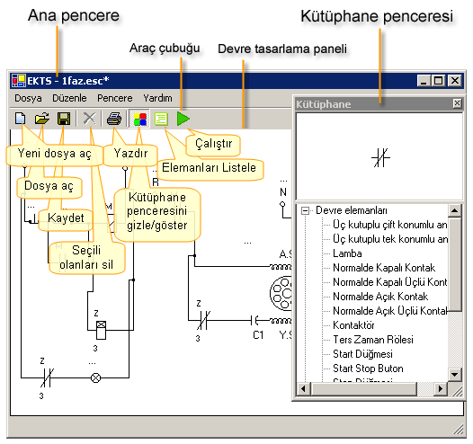

EKTS, Şekil 3'de gösterildiği gibi, biri devrenin tasarlandığı ana pencere ve diğeri elemanların bulunduğu kütüphane penceresi olmak üzere iki pencereden oluşmaktadır.

Şekil 3: Kullanıcı arabirimi
Ana pencerenin üst tarafında araç çubuğu bulunmaktadır. Araç çubuğunda dosya işlemlerini yapmak için dosya açma ve kaydetme, devreden seçili elemanları silme, baskı ön izleme ve yazıcıdan çıktı alma, tasarlanan devreyi çalıştırma düğmeleri bulunmaktadır. Araç çubuğunun altında ana pencereyi kaplayan devrelerin tasarlandığı panel bulunmaktadır. Kütüphane penceresinde ise devre elemanlarının grup halinde listesi ve seçili elemanı görmek için bir panel bulunmaktadır. Listeden devre elemanına çift tıklanarak ana penceredeki devre tasarlama paneline eklenebilir.